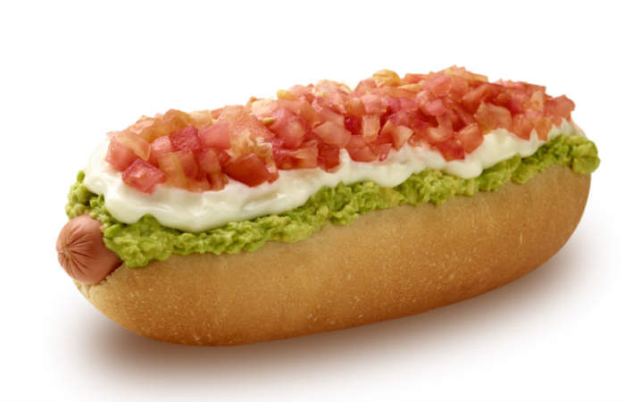

Completos

Esta cuestion es entero rica oe aaaaaaaaa.
COMAN COMPLETOS WNNN SON TERRIBLE FACILES DE HACER Y ENTERO WENOS LOKOWM
Ingredientes
- Vienesas
- Pan
- Tomate
- Palta
- Mayo
- Loquetuquerai
Pasos
- Hierve las vienesas
- Tosta el pan troglodita ql
- Pica el tomate en cuadritos
- Muele la palta
- Pescai el pan y le poni una vienesa adentro
- Al mismo pan con vienesa le echai tomate
- Echale la palta tambien encima a la wea
- Si le queri poner mas ingredientes, ahora es un buen momento
- Échale mayo a tu gusto comparini
- Cómetelo atravesao